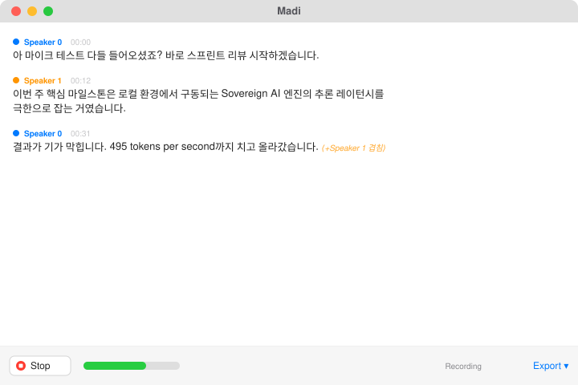

Live transcription
Low-latency captions with overlap-aware merging, stable interim text, and Korean-friendly formatting.
Madi turns live audio into searchable transcripts, speaker-aware notes, translation, summaries, and recall — with inference on your own Apple Silicon.
macOS 14+ · Apple Silicon · No cloud processing · Speech model downloads once on first launch

Capture system audio or a microphone, follow the conversation live, then search and reuse what was said without uploading the meeting to a processing service.
Low-latency captions with overlap-aware merging, stable interim text, and Korean-friendly formatting.
Speaker-aware turns and voiceprint workflows keep multi-person conversations readable.
Optional on-device language models translate without sending transcript content to a hosted model.
Build recaps, action items, open loops, and answers from the meetings already in your workspace.
Your recordings and transcripts remain local files with practical export paths for downstream work.
A SwiftUI application backed by Metal and Zig, tuned around Apple Silicon rather than a browser shell.
The source, data paths, build instructions, privacy model, and release provenance are public and reviewable.
Audio, transcripts, translation, summaries, and retrieval are processed on-device. Network use is limited to explicit downloads and update checks.
Build the public source without separately licensed translation engines using one documented environment flag.
Release workflows generate checksums, SPDX SBOMs, and build provenance attestations.
Governance, security reporting, support, contribution rules, and a public roadmap live beside the code.
Madi is now public. Try the current release, build an AGPL-only bundle from source, or pick up an issue and make local meeting intelligence better.